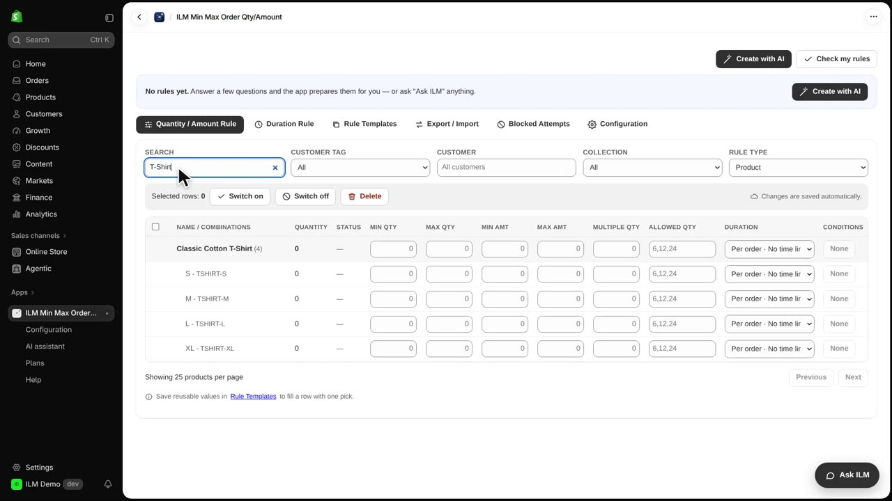
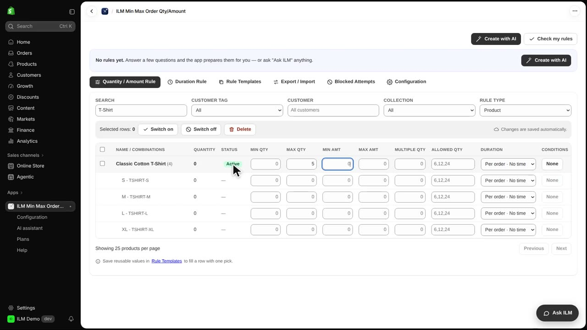
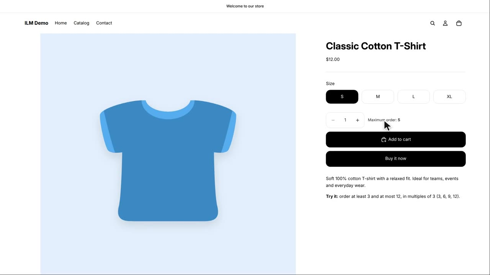
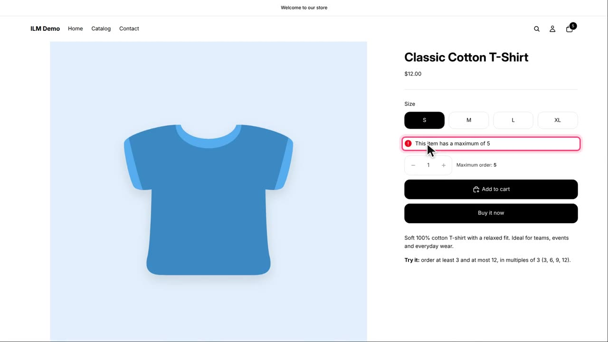
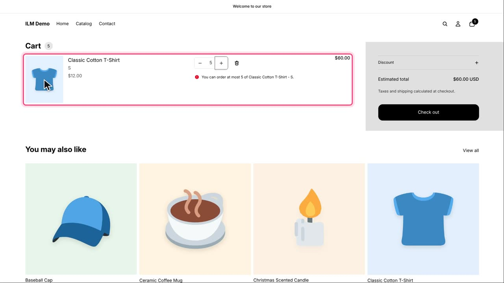

In this lesson you set a maximum quantity, so nobody can order more than a certain number of a product. This is useful when stock is limited, when you sell a rare or handmade item, or when you want to stop one buyer from clearing your whole shelf. Our example today is the Classic Cotton T-Shirt, capped at five per order. You will see the rule being set in the app, then what the shopper sees on the product page and in the cart.
We start in the Quantity / Amount Rule tab of the app. In the search box we look for the T-Shirt, and the matching product row appears in the list.

In the Max Qty field for the T-Shirt we type five. As soon as you leave the field, the rule is saved and the row shows Active, which means the limit is live on the storefront right away. If you ever want to remove the limit, you clear the field and the product goes back to unlimited.

Now we open the T-Shirt on the storefront. Next to the quantity box the shopper sees the maximum, so the limit is clear before they even try to order.

The shopper tries to type eight into the quantity box. The box does not go above five, so the number stays at the maximum.
Five T-Shirts go into the cart. When the shopper tries to add one more, Shopify refuses it and shows the maximum message.

Finally, in the cart the shopper raises the quantity to seven. That change is refused the same way, and the cart keeps five.
